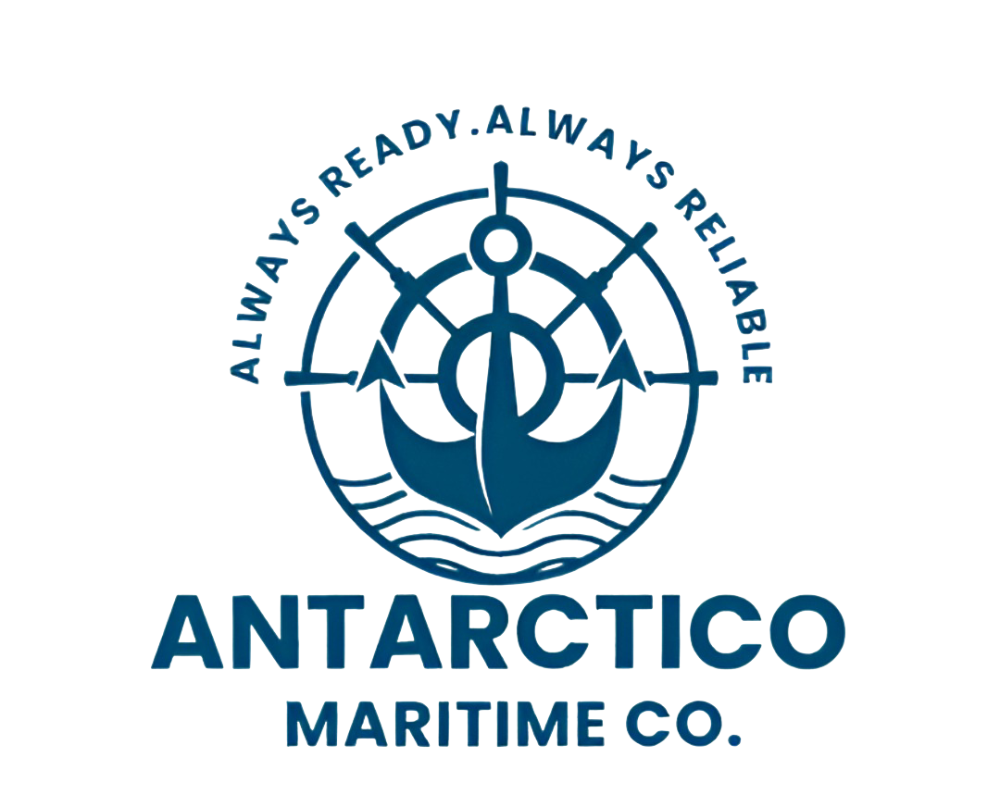

ANTARCTICO MARITIME
Contact
Gmail link:
antarcticomaritime@gmail.com
Home
About Us
Services
Repairing
Chandling
Port of services
Product
Contact
Chandling Services
Fresh Food Supply – Vegetables, fruits, meat, fish, dry goods
Drinking Water Supply – Bottled water and bulk fresh water
Engine & Deck Store Items – Tools, paints, ropes, lubricants, etc.
Cabin Stores – Cleaning products, toiletries, kitchen items
Safety Equipment – Life jackets, fire extinguishers, first aid kits
Medical Supplies – Basic medicines and medical kits
Bonded Stores – Cigarettes, soft drinks, chocolates (duty-free)
Stationery & Office Supplies – Papers, pens, logbooks, etc.
Waste Disposal Service – Garbage and sludge removal
Bunker Fuel Arrangements (on request) – Marine fuel coordination